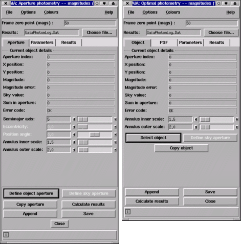

Toolboxes are provided for performing interactive aperture and optimal photometry. These allow the control of the positions, sizes and orientations of circular and (for aperture photometry only) elliptical apertures. The sky estimates can be made from annuli of these apertures or from related sky apertures. The measurements can be in either instrumental magnitudes or mean counts.
The measurements are saved to disk file and can be restored or used non-interactively (to repeat the same measurements on other images) with the AUTOPHOTOM program, which is part of the PHOTOM package.
To select aperture photometry choose the "Aperture photometry" or "Optimal photometry" item in the "Image-Analysis" menu and select making measurements in magnitudes or counts. Usage hints for each type of toolbox can be found in the following pages:
